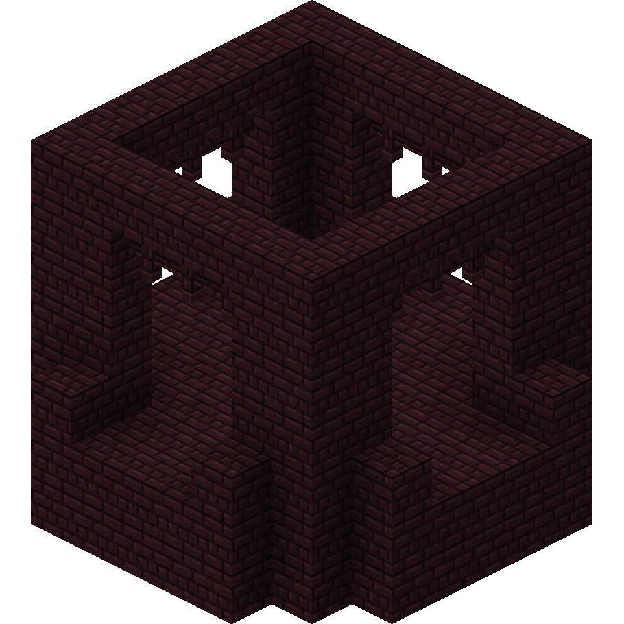
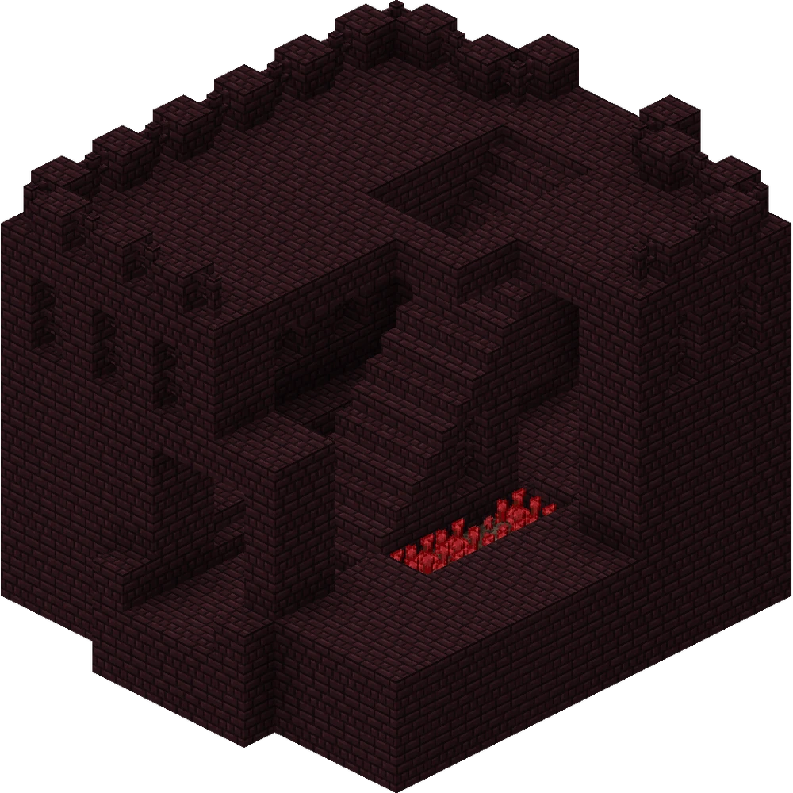
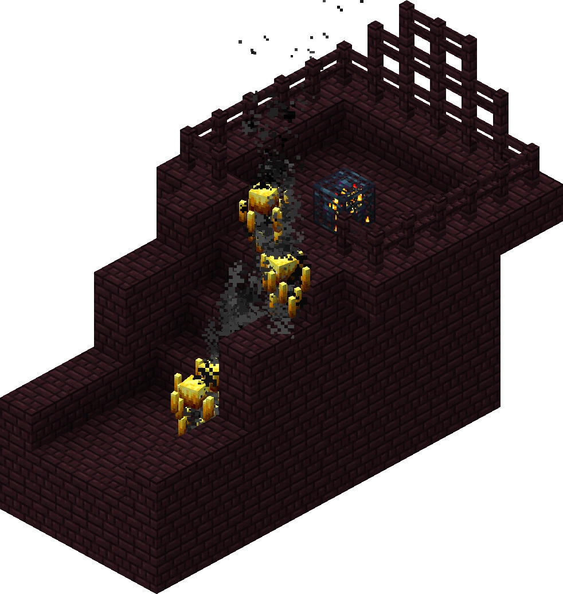
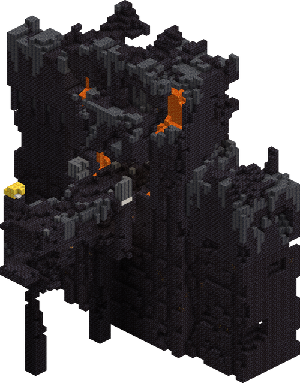
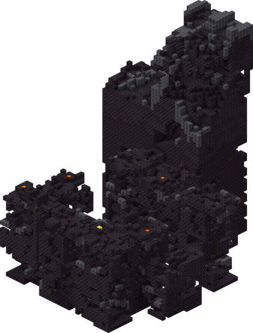
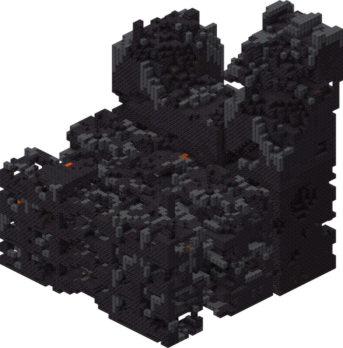
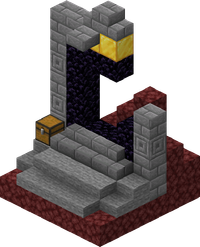
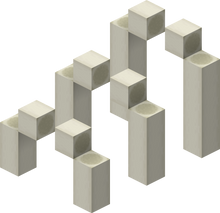
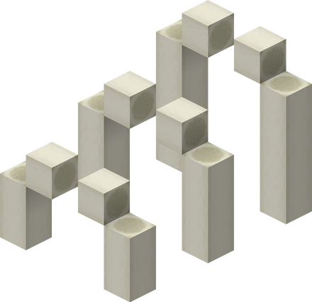
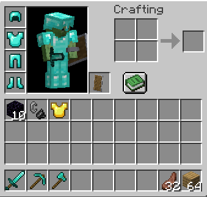

An intro to the nether
Welcome to the Nether. The Nether is one of Minecraft's 3 dimensions which you'll encounter when trying to beat the game.
Unlike the Overworld, which looks relatively normal and peaceful, the Nether is a dimension filled with molten hot lava and dangerous creatures. The ominous atmosphere in this dimension is filled with danger and you should always keep your guard up while venturing this dimension.
An image of the Nether:

But first, how exactly do you get in the Nether? o access this dimension, you'll need 10 obsidian and a flint and steel. Once you've gathered the materials, start building the Nether portal. You may use the image below as a guide when making the nether portal
An image of a simple nether portal

The Structures
The Nether Fortress
Just like the Overworld, the Nether contains lots of unique structures. Most structures are very useful for your progression but some are not.
One of the Nether's most popular and important structures is the Nether Fortress. Nether Fortresses are large fortresslike buildings which are made up of red nether bricks. In these fortresses, you will encounter lots of hostile mobs such as wither skeletons, blazes and more. One of this structure's most useful features are the blaze spawneres, which you can use to gather blaze rods which can be used to make potions and eye of enders, which is one of the materials needed to open the end portal.
An image of some of the Nether Fortress' areas:




The Bastion Remnant
Another useful structure in the nether is the bastion remnant. Bastion remnants are gray ruined castle-like buildings which are guarded by piglins and piglin brutes. There are 4 types of Bastion Remnants, all containing loot inside them. This structure is important since this is where you can get netherite upgrade templates, a material used to upgrade your armor to netherite.
An image of the 4 types of bastion remnants.




The Ruined Portal
A small structure that can be found in the Nether is the ruined portal. The ruined portal can be found in both the Overworld and the Nether. This structure looks like a destroyed nether portal with some stone and gold blocks added for decoration. There's also a chest near the portal which contains some loot. However, the loot here isn't as good as the loot found in Bastion Remnants.
An image of a ruined portal:

The Fossil
Fossils are structures made up of bones blocks that resemble the skeletal structure of some sort of creature in the Nether. These structures are found in soul sand valleys. Unlike the other Nether structures, this one doesn't contain any loot and isn't that useful for your progression.
You can also sometimes find dried ghasts near these fossils.
An image of some of the fossils in the Nether:



The Biomes
The Nether Waste
The Nether Waste is the Nether's most common biome. This biome is filled with netherrack and seas of lava with glowstone hanging in the ceiling. You can find quartz and gold ores in this biome and they're pretty common. However, you can also find ancient debris beneath the surface of this biome, usually at Y-level 15. Most of the nether mobs spawn here such as ghasts, piglins, magma cubes, striders and more.
An image of the Nether Waste biome:

The Soul Sand Valley
The soul sand valley is a biome covered in soul sand and soul soil, along with some gravel and has a blue fog for its atmosphere. In the large terrain of soul sand and soul soil, you will see some fossils and soul fire. You will also encounter ghasts and skeletons when traversing through this biome.
An image of a fossil in the soul sand valley

The Crimson Forest
The Crimson Forest is a huge forest biome covered in red plants such as crimson roots, vines, stems and more. The biome has a red atmosphere, fitting its crimson vibe. In this biome, You'll often see hoglins and piglins roaming around the forest. There are also striders that can spawn in the tiny lava lakes which can generate around the biome.
An image of the Crimson Forest:

The Warped Forest
The Warped Forest is like the blue counterpart of the Crimson Forest. The warped forest is a huge forest biome covered in blue plants such as warped roots, vines, stems and more. This biome has a blue/cyan fog for its atmosphere. Hostile mobs such as hoglins do not spawn naturally in this biome. Instead, the main mob which inhabits this forest is Endermen.
An image of the Warped Forest:

The Basalt Delta
The Basalt Delta features a jaggy land of basalt and blackstone and has a grayish fog for its atmosphere. This biome also contains tons of lava pools between the gray terrain which striders inhabit. The most common mob in this biome is the magma cube, as they have a higher spawn rate in this biome than any other biome.
An image of the Basalt Delta:

A quick progression guide
Before entering the nether portal
Before venturing through this realm, make sure you've properly prepared in the overworld. Make sure that you have diamond armor and weapons so that you'll have an easier time facing the hostile mobs in the nether. It is also encouraged that you enchant your gear for better chances of survival. Make sure that you have plenty of food as you're gonna be sprinting and healing alot when adventuring the nether. Make sure that you have any piece of gold armor in your inventory. This is because piglins won't attack you when you wear at least 1 piece of gold armor. Finally, bring some spare obsidian and flint-and-steel once you're ready to go back to the overworld.
Here's a recommended inventory before entering the nether:

Gathering loot and resources
One of the game's most valuable resources is netherite. To get netherite, you first need 4 ancient debris. To farm ancient debris efficiently, craft as many beds as possible and head down to y-level 15 at a nether waste biome. Once you're here, start exploding the beds. Doing this will destroy and netherrack and will reveal ancient debris.
If you need XP for stuff like enchanting, mining the quartz ore will be helpful since nether quartz ore give a lot of XP. Since they spawn in in large veins, make sure you bring a strong pickaxe!.
If you want to brew potions, make sure you gather the nether wart found in nether fortresses.
Exploring structures
When venturing through a nether fortress, your priority should be finding a blaze spawner. Once you've found a blaze spawner, kill some blazes until you get a decent amount of blaze rods. You can turn these blaze rods into blaze power, which is used to craft eye-of-enders. If you're interested in summong the wither, grab some soul sand from the soul sand valley and kill wither skeletons until you get 3 wither skeleton skulls.
For bastion remnants, be extremely careful since piglin brutes have high hp and deadly damage. Do not let your guard down since if you get knocked back by the mobs' attacks, there's a chance you fall to your death since bastion remnants are pretty tall in height. When you reach the chests of a bastion remnant, there's a chance you get some netherite scrap and a netherite upgrade template, which makes the trip worth it :D
Setting up a gold farm (optional but recommended for late-game)
Farms are one of, if not the most efficient ways to get resources in Minecraft. One of the best and easiest (but lengthy) farms to make in the nether is a piglin gold farm. Piglin gold farms provide not only XP, but also lots of gold. Building these gold farms will usually require you to get in the netherroof. To do this, get a ladder on the bedrock ceiling and use an ender pearl at the corner/edge of the bedrock. To build the farm, you can simply watch a piglin gold farm tutorial on YouTube since there's a lot of helpful videos that explain how to make them.